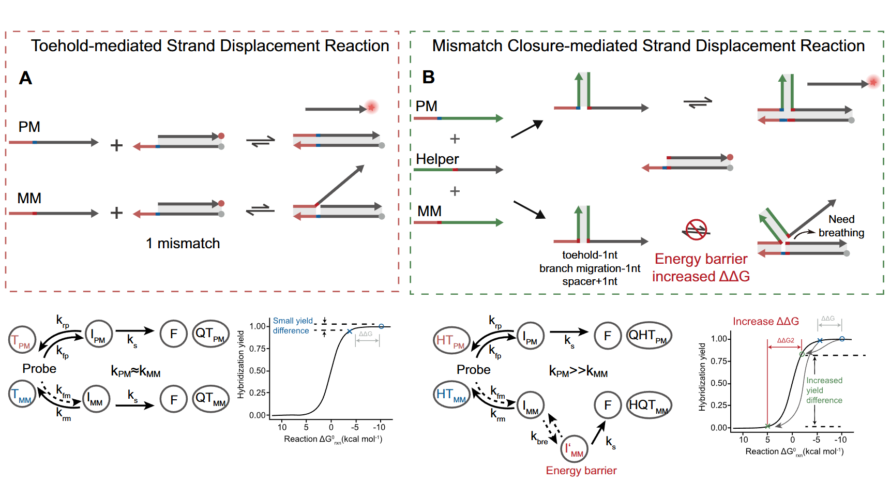
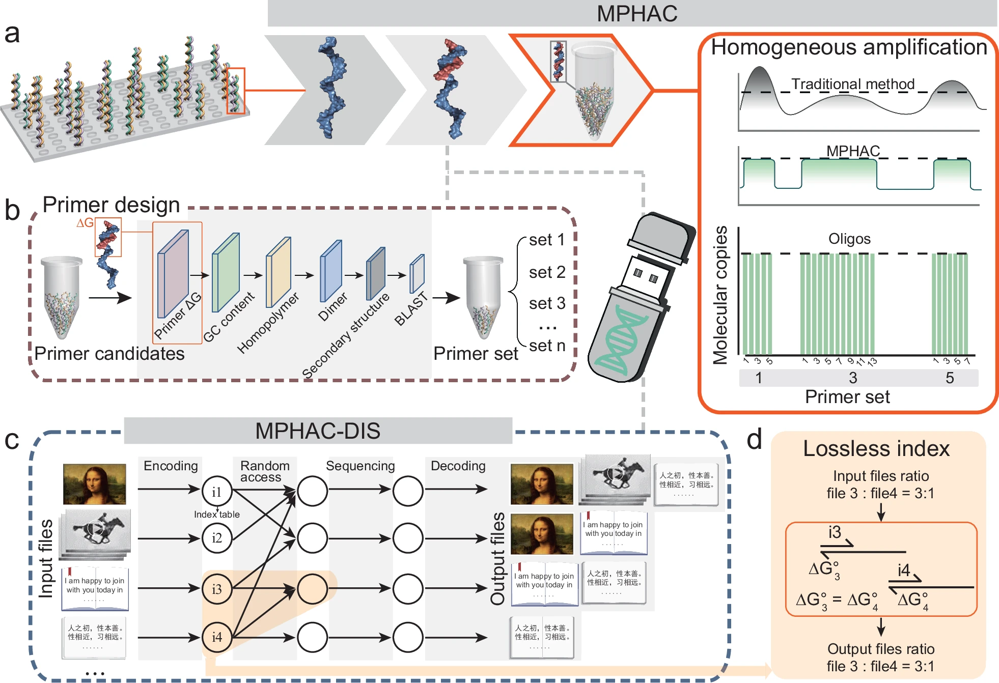
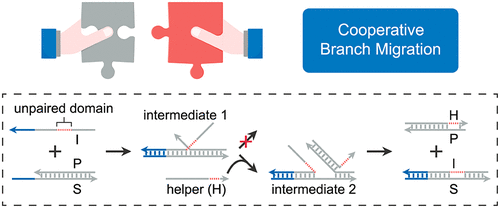

研究方向
DNA数据存储
开发高密度DNA存储技术，将数字信息编码到DNA序列中，实现超高密度、长期稳定的数据存储解决方案。
高通量DNA测序
研究新一代测序技术和算法优化，提高测序通量、准确性和速度，推动基因组学研究和精准医疗发展。
核酸分子诊断
开发创新的核酸检测技术和诊断平台，实现快速、灵敏、特异的病原体检测和遗传疾病诊断。
DNA Nanotechnology Researcher
我是wz222，上海交通大学生物医学工程学院博士研究生。专注于DNA纳米技术的前沿研究，致力于开发创新的分子设计方法和生物医学应用。
开发高密度DNA存储技术，将数字信息编码到DNA序列中，实现超高密度、长期稳定的数据存储解决方案。
研究新一代测序技术和算法优化，提高测序通量、准确性和速度，推动基因组学研究和精准医疗发展。
开发创新的核酸检测技术和诊断平台，实现快速、灵敏、特异的病原体检测和遗传疾病诊断。
Nucleic Acids Research 53 (13), gkaf660 (2025)
Nature Communications 16 (1), 667 (2 citations)
Journal of the American Chemical Society 146 (51), 35155-35164 (4 citations)
Chinese Journal of Chemistry 42 (21), 2572-2580 (2 citations)
Chemical Engineering Journal 498, 155509 (2 citations)
Analytica Chimica Acta 1302, 342493 (2024)
Angewandte Chemie International Edition 63 (19), e202400551 (8 citations)
ACS Nano 18 (19), 12401-12411 (10 citations)
Biosensors and Bioelectronics 245, 115823 (7 citations)
Chemical Communications 59 (28), 4158-4161 (6 citations)
Nucleic Acids Research 50 (20), 11727-11737 (57 citations)
Bioelectrochemistry 146, 108152 (4 citations)
Microchemical Journal 178, 107340 (4 citations)
Sensors and Actuators B: Chemical 358, 131462 (15 citations)
Analytica Chimica Acta 1199, 339568 (3 citations)
ACS Nano 16 (2), 3135-3144 (32 citations)
Biosensors and Bioelectronics 194, 113625 (38 citations)
Analytica Chimica Acta 1147, 108-115 (19 citations)
Analytica Chimica Acta 1143, 157-165 (33 citations)
Sensors and Actuators B: Chemical 324, 128719 (3 citations)
Journal of the American Chemical Society 142 (8), 3959-3969 (204 citations)
Analytical Methods 12 (44), 5392-5396 (2 citations)